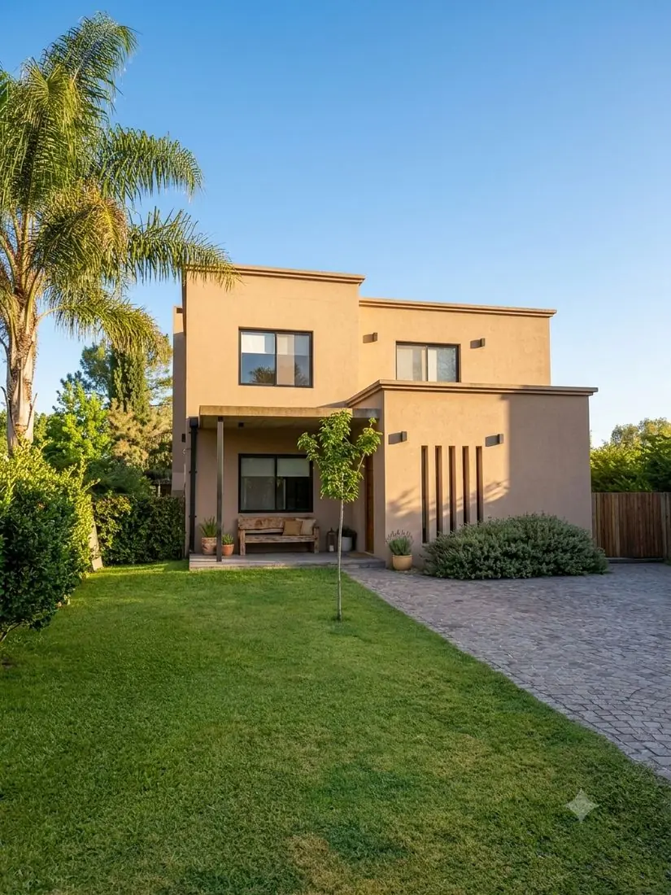

Casa El Portal
El Portal de Pilar · 2021 · 220 m² · Obra nueva
Vivienda unifamiliar de 220 m² proyectada y construida íntegramente por el estudio: proyecto, dirección y ejecución. Es, además, la casa propia del socio fundador — el estudio construye donde vive.

